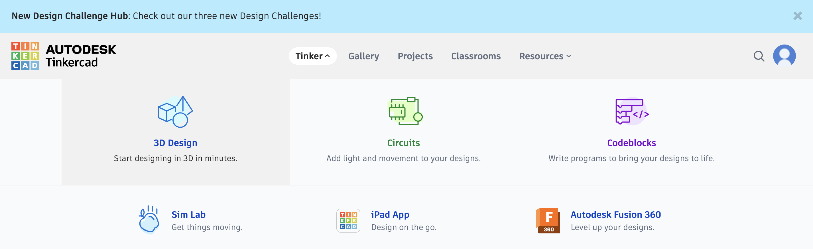
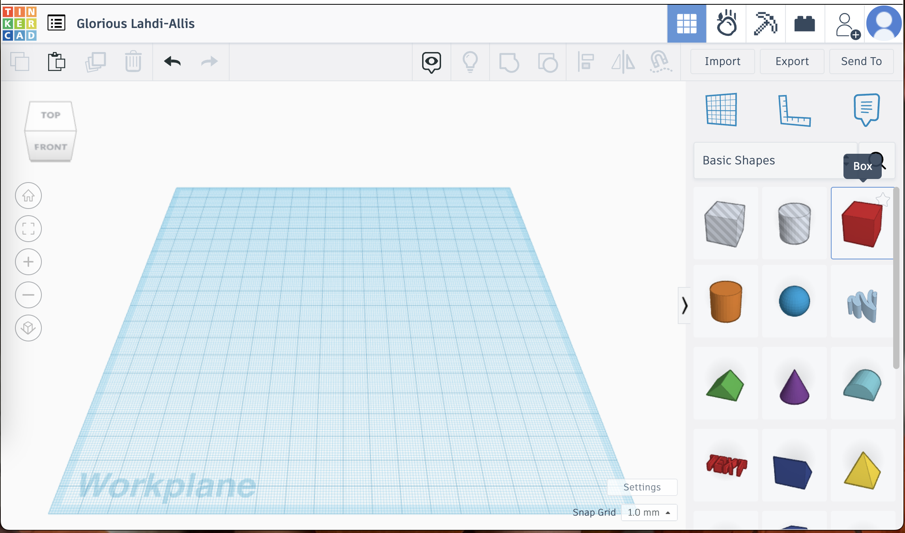
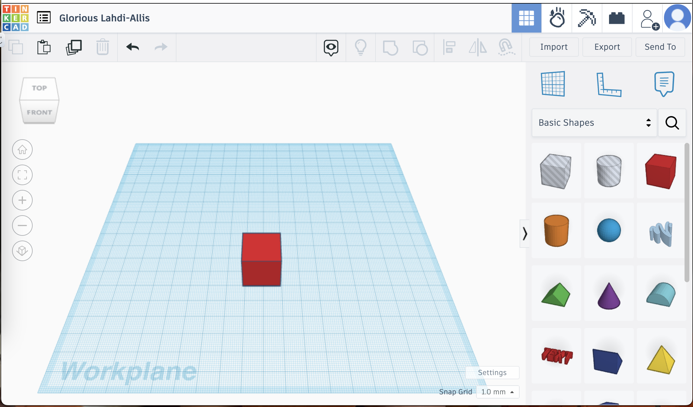
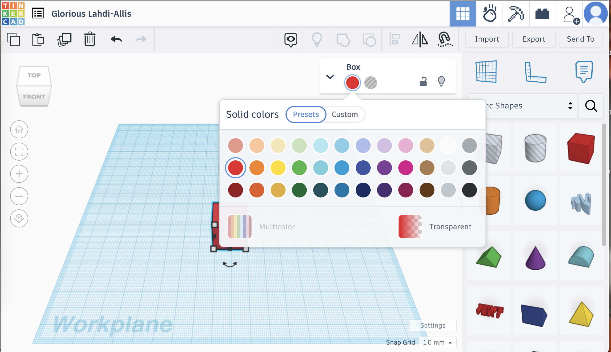
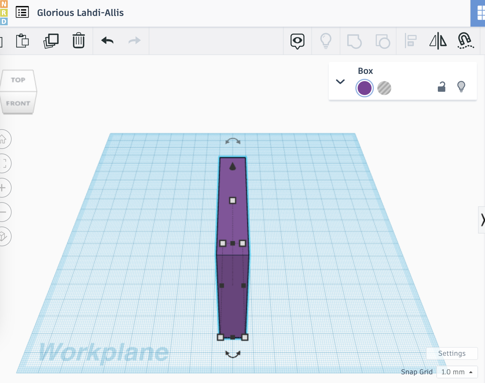
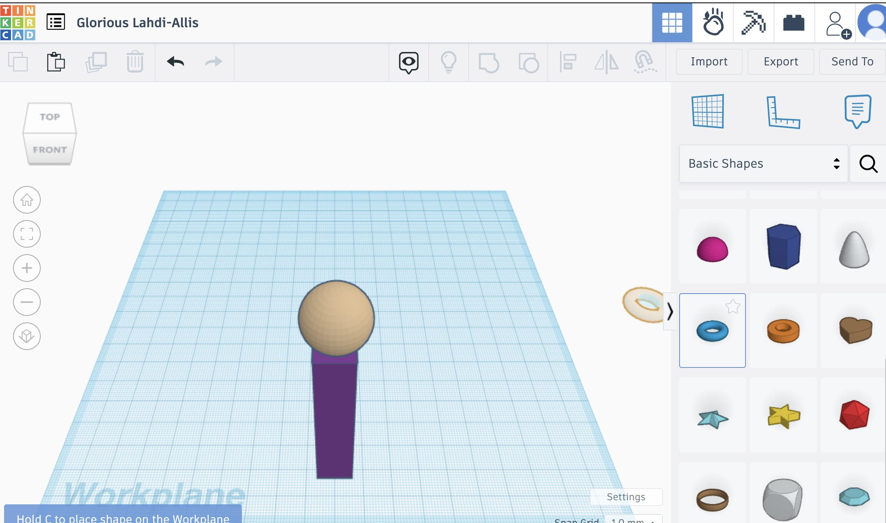
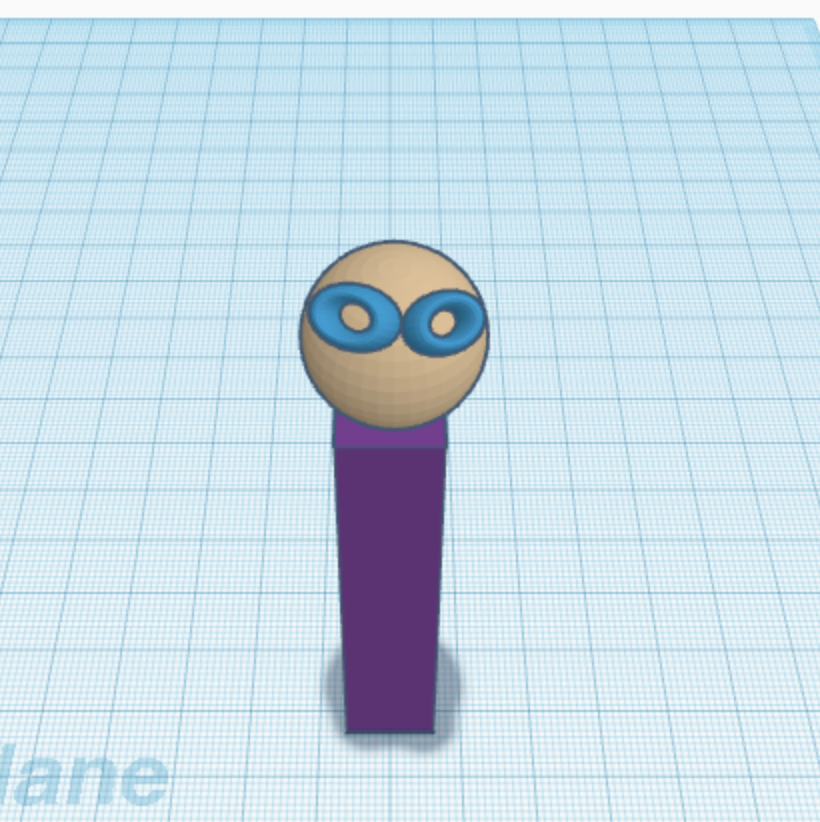
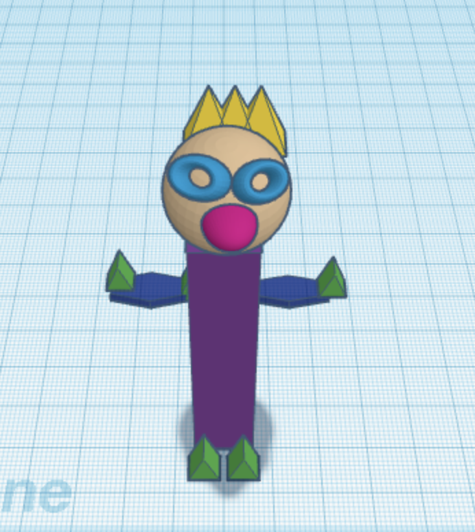
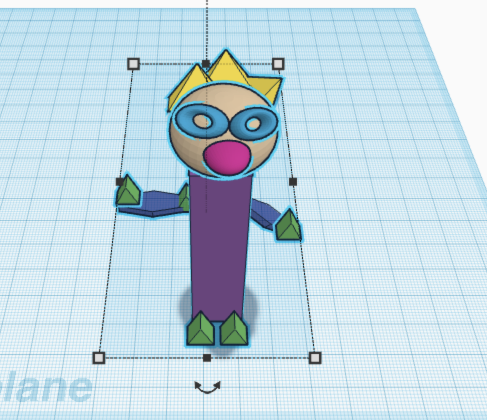
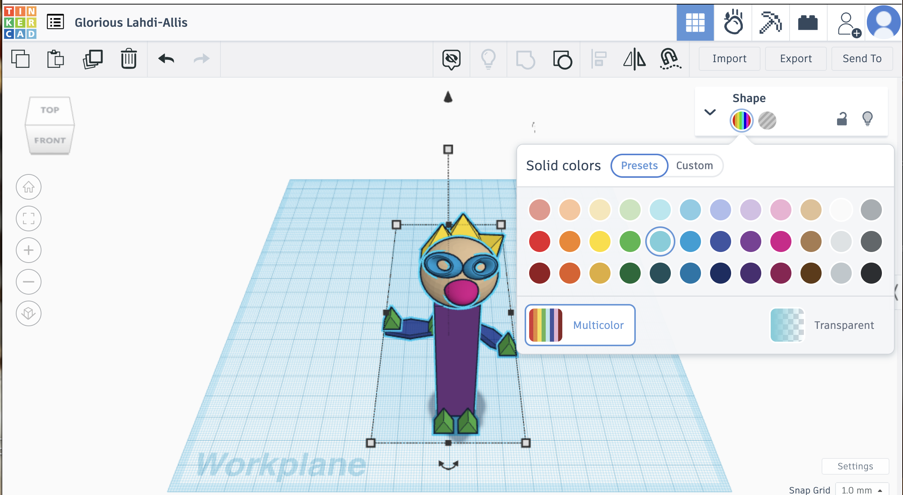

Do It! Tinkercad: Engineering an Extraterrestrial
 The Challenge
The Challenge
Your challenge is to use Tinkercad to design your own 3D extraterrestrial character. Then, write a description about it.
Project Steps
-
Plan Your Extraterrestrial
-
Create your Extraterrestrial in Tinkercad
- Identify the Shapes
-
Write a Description
Plan Your Extraterrestrial
Start by brainstorming what your extraterrestrial character might look like. Consider the number of eyes, limbs, and any unique features you would like your extraterrestrial character to have. Your extraterrestrial character could be slimy, furry, scaly, or have patterns. Your extraterrestrial might have three arms or one eye, it is up to your imagination. Each part of the extraterrestrial character should be represented by a simple shape (circles, squares, triangles, etc.). Sketch your plan out on paper.
Create your Extraterrestrial in Tinkercad
- Open a new 3D design in Tinkercad.
 - This is the workplane where you will create your extraterrestrial character on using your sketch. The Tinkercad workplane looks a lot like a piece of graph paper.
 - On the right hand side of the screen, find the box shape in the Shapes Panel. Left click and drag the box shape on to the workplane.
 - Choose the color of your shape.
 - You can change the height and width of your shape by using the handles on the bottom of the shape.
 - Give your extraterrestrial character a head! Remember, it can be whatever shape you like and whatever color you like.
 - Now it's time to add your eyes. Remember it is up to you to decide what shape and color (and how many eyes) your extraterrestrial character will have.
 - Add arms, hands, legs to your extraterrestrial character. Be sure to include something for your extraterrestial to hold.
 - Finally, select all of the objects that make up your extraterrestrial. Group them together. This will change the color of all of the objects. Don’t worry, you can change the colors back in the next step.
 - You can switch back to the original colors by going to Color and selecting “multicolor”. Take a screenshot of your final extraterrestrial design to upload for your project submission.

Identify the Shapes
While looking at the extraterrestrial you have created, identify each of the shapes you used, draw a table and fill in your information. For example, if you used a circle for the extraterrestrial’s eye or a square for it’s head you would fill that in below. You
| Body Part | Shape |
| eye | circle |
| head | square |
Write a Description
Write a description about your extraterrestrial character. What are its special abilities, what tool is it holding and why, where does it come from, and what does it like to do? You will upload your short story for your project submission.